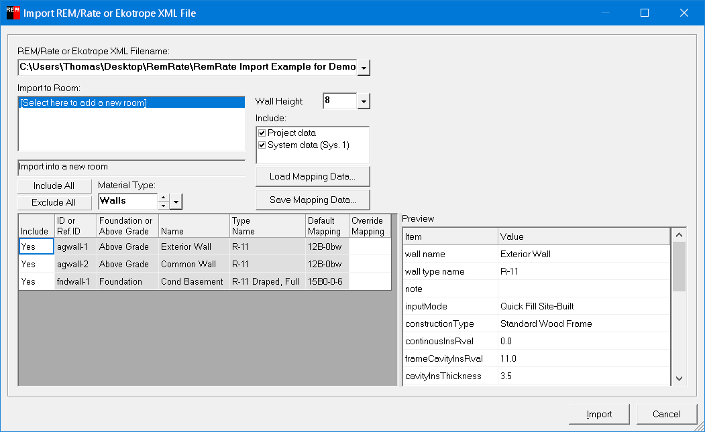

Import XML File from REM/Rate or Ekotrope (File Menu) |
  
|
Import XML File from REM/Rate or Ekotrope (File Menu) |
|
Icon: . Keyboard Shortcut: ALT, F, I, X
Opens the Import REM/Rate or Ekotrope XML File dialog, which lets you import an XML file that you exported from either the REM/Rate or Ekotrope program, available at www.remrate.com and www.ekotrope.com

REM/Rate or Ekotrope XML Filename: Specifies the name and path of the XML file that you exported from either the REM/Rate or Ekotrope program. Click the dropdown help button to browse for an XML filename. Included with your installation of Rhvac are some example XML files in the following folder: "C:\Users\Public\Documents\Elite Software Data\Rhvac 10".
Import to Room list: Shows all the rooms defined in the project, plus one entry at the end of the list that says, "[Select here to add a new room]". Select either that final item, or one of the rooms in the project, if you have already created any rooms. Note that since this dialog lets you specify exactly which elements of the XML file to import, you may want to import from an XML file repeatedly, only bringing in certain parts after the first import where you may have included everything.
Note that the first material included in the import will also be imported into the Default Room Data window.
Wall Height: Specifies the height that you want to use for any above grade walls that are in the XML file. The XML file will only have the areas of such walls, not their lengths and heights. So this input lets you specify a height so that wall lengths can be assigned.
Include Project Data: Specifies whether you want to include some of the data that is entered on the General Project Data window.
Include System Data: Specifies whether you want to include system ventilation and exhaust data to be imported into system 1.
Load Mapping Data, Save Mapping Data: These buttons let you save or open a file that contains all of the material names you entered in the Override Mapping column in the material grid. Each mapping associates the value in the Type Name column with the material you entered in the Override Mapping column. This feature lets you repeat the same overrides you might enter for various material type names.
Include All, Exclude All buttons: These buttons let you set the visible Include column values in the material grid to either Yes or No.
Material Type: Determines the kind of materials shown in the grid below.
Material Grid: This grid shows all the materials of the current type that are in the XML file. Set the Include column to Yes for each material you want to import. Fill in a material name in the Override Mapping column for any materials where you want to change the mapping shown in the Default Mapping column.
Note that the first material included in the import will also be imported into the Default Room Data window.
Preview: Shows the contents of the XML file for the current material item that you have selected in the grid. Not all data shown in the preview is included in the import. Looking at the Preview list can help you better choose a mapped material to enter in the Override Mapping column if you choose to override the Default Mapping column.
Import button: Performs the import, and closes the window.
Cancel button: Closes the window without making any changes to the current project.